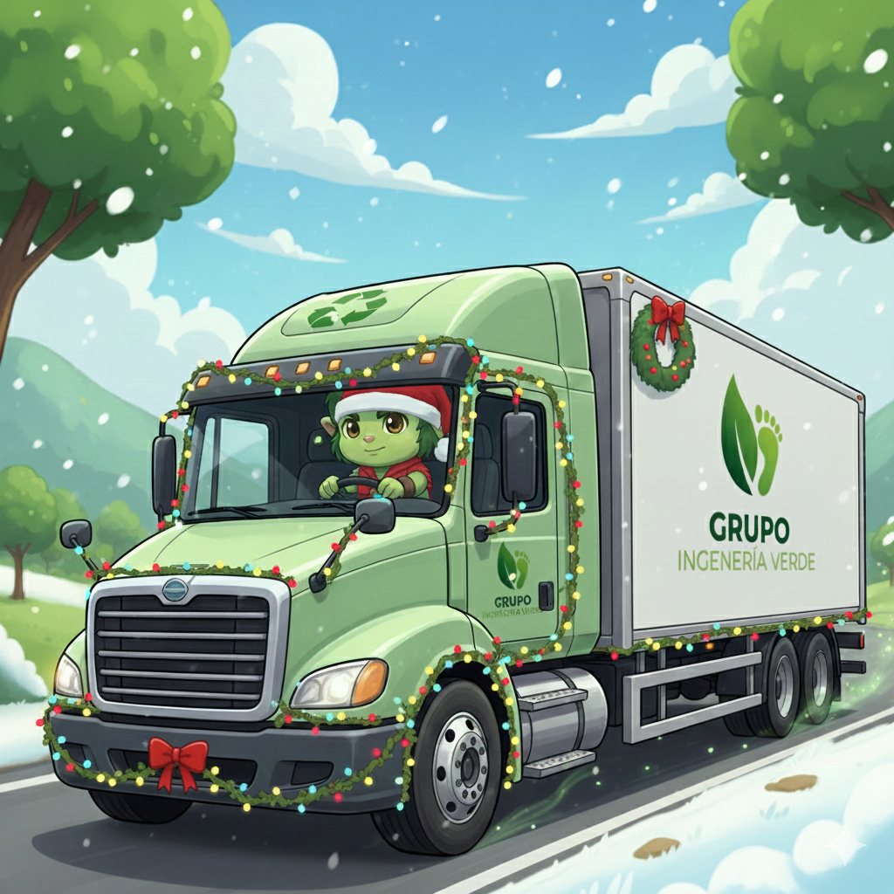

Más que un centro de acopio, somos un motor de cambio ambiental para El Guarco ♻️
Ver Materiales AceptadosEl Centro de Acopio El Guarco es una realidad que comenzó con una simple idea y mucha voluntad. Iniciamos sin grandes recursos, pero con la inquebrantable creencia de que cada persona en nuestra comunidad tiene un papel fundamental en la sostenibilidad. Estamos construyendo algo grande, y lo hacemos juntos. Creemos firmemente que la ambición de crecer y ser los líderes ambientales del cantón solo se logrará con tu apoyo y el compromiso diario de cada ciudadano.
Separamos y organizamos los materiales reciclables de forma eficiente.
Ofrecemos recolección de materiales en diferentes zonas del cantón.
| Material | Descripción |
|---|---|
| Plásticos | Botellas PET, envases plásticos limpios |
| Cartón | Cajas limpias y secas |
| Papel | Hojas, cuadernos y periódicos |
| Vidrio | Botellas y frascos sin residuos |
| Metales | Latas de aluminio y acero |
📍 El Tejar, Cartago, Costa Rica
200m Sur y 150m Oeste del Restaurante El Quijongo.
Lunes a Viernes: 7:00 am – 5:00 pm
Sábados: 7:00 am – 12:00 md
Teléfono: +506 8888-8888
Correo: info@acopioelguarco.com
Dirección: El Guarco, Cartago, Costa Rica